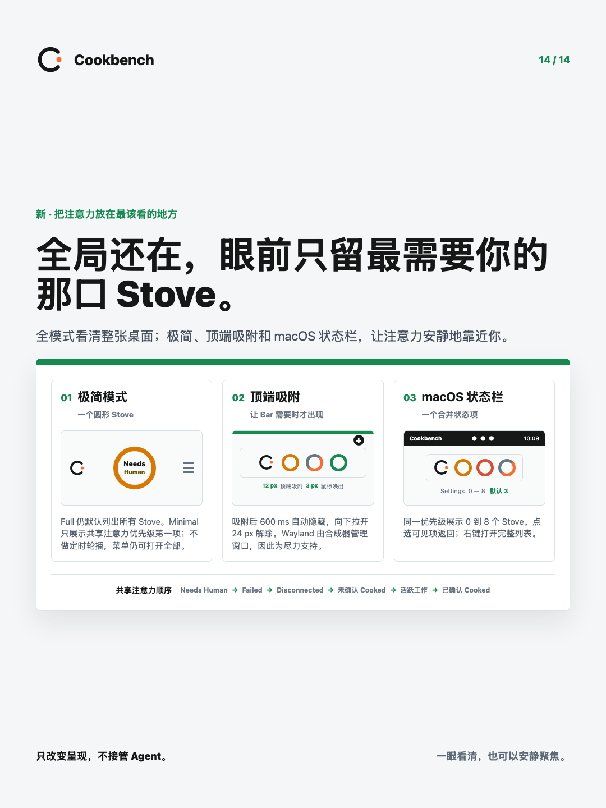

COOKBENCH / FOCUS SURFACES04 · 23.5 SEC
CONTEXT SWITCHING / 01
又要切回终端？状态散在每个窗口里。
每次回来，先确认谁还在跑，谁正在等你。
Agent 会话CHECK
另一个终端CHECK
还有一个窗口CHECK
MINIMAL MODE / 02
少一点干扰，多一点专注。
只把需要回来的状态留在眼前。
FOCUS SURFACES / 03
顶边停靠，
需要时出现。
空闲时收起，不抢走工作空间。

顶边停靠
STATUS STOVES / 04
macOS 状态 Stoves
一眼分清。
烹饪中
进行中的状态
等待处理
需要回来的状态
已完成
完成状态仍可见
PRODUCT BOUNDARY / 05
原工具仍是工作现场。
OBSERVE
只观察必要状态
DO NOT COPY
不复制完整对话
DO NOT CONTROL
不接管 Agent
会话内容留在原来的 Agent 工具里。
 Cookbench
Cookbench看清状态，继续专注。
轻量，刻意为之。
github.com/finitein/cookbench